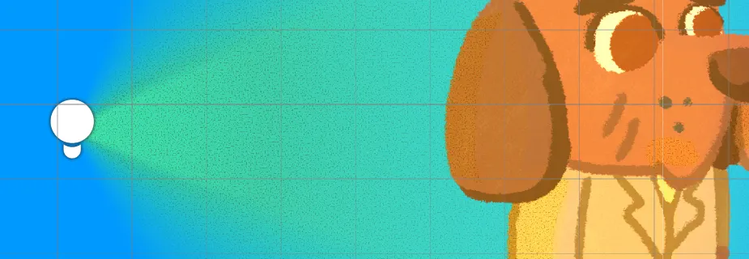
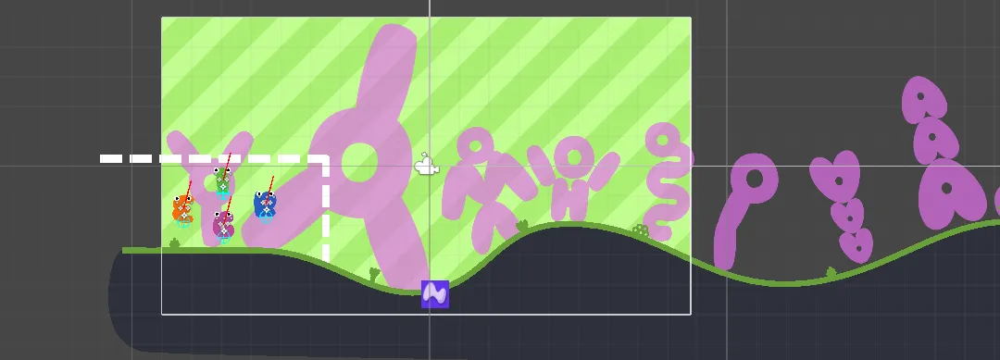
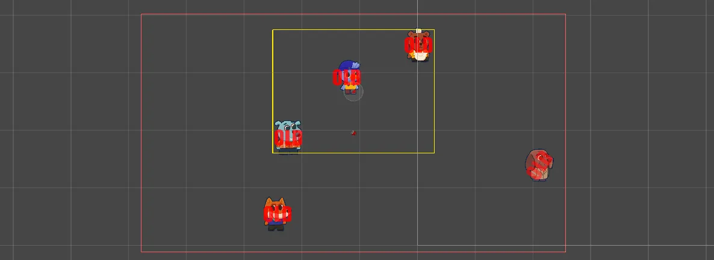
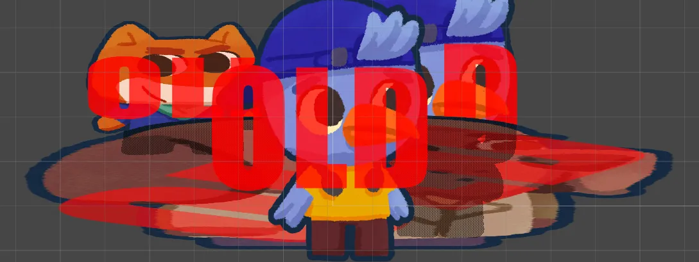

Gerard Gascón
I am Gerard, a young, self-taught game developer focused mainly on programming and this is my personal blog.

Today, I’ve been working to add a subtle texture to any 2D Light present in the scene. This could be accomplished in two completely different ways, one would be using 2D Sprite Lights, using one sprite for the light itself and another sprite right on top with a noise texture to create this effect. Although, using this kind of light can easily limit us in many ways and one of them being importing lots of different sprites, so I found a small trick to avoid doing that....

Creating a game with a large background can cause some large messes like this one: A huge background that was made out of dozens of images. But after some workaround, I ended up discovering that you can replace that with a Raw Image and a simple script. Setup To start, we need to create a specific canvas for the Raw Image and set its Render Mode to Camera. Then we create a Raw Image child and set it to stretch....

Today, I’ve developed another basic tool that could be useful to someone else. It is called the Cinemachine Scaler, an extension that changes the orthographic size to avoid hiding important sprites with the UI. While testing some dialogues with Cinemachine, we’ve found that the Target Group made some characters appear under the dialogue’s UI. While this could be solved by increasing the radius of the character that is being occluded, it isn’t the most elegant solution....

I am developing a game, and recently it required to have silhouettes for when the player is behind an obstacle. To my surprise, I found no tutorials covering this at all. Even though there exist some, they only cover a small part of what any top-down 2D game would need. So after some trial and error I found a way, with some room for improvement, that solves those cases found in other tutorials....